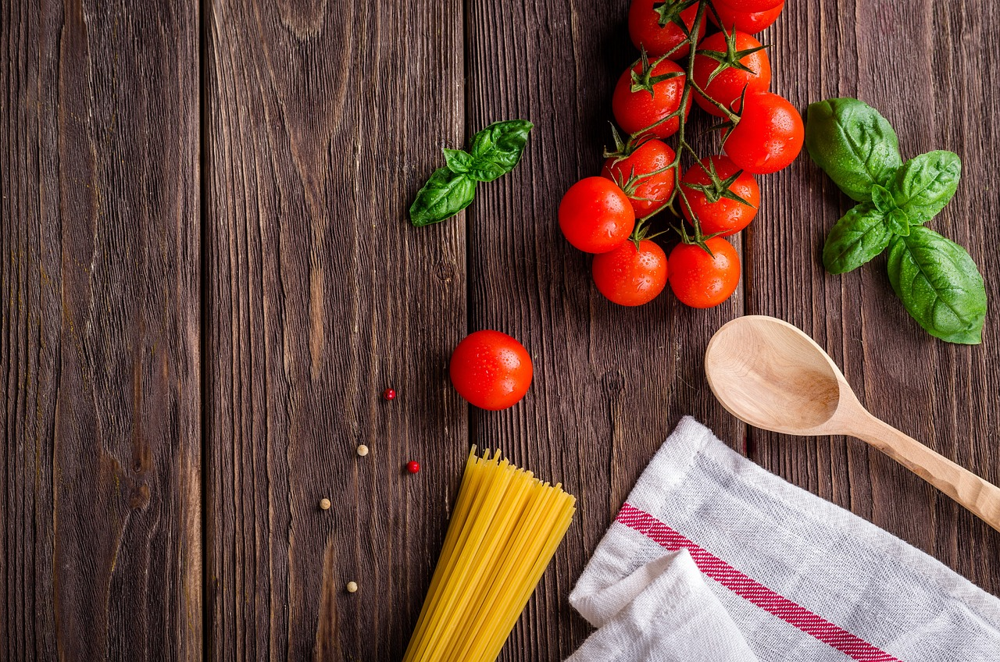

Основа раціону
Щоденне вживання цільних продуктів усіх харчових груп, мінімум 400 грамів свіжих овочів та фруктів, а також підтримання водного балансу чистою водою для нормального функціонування всіх систем організму.
Щоденне вживання цільних продуктів усіх харчових груп, мінімум 400 грамів свіжих овочів та фруктів, а також підтримання водного балансу чистою водою для нормального функціонування всіх систем організму.
